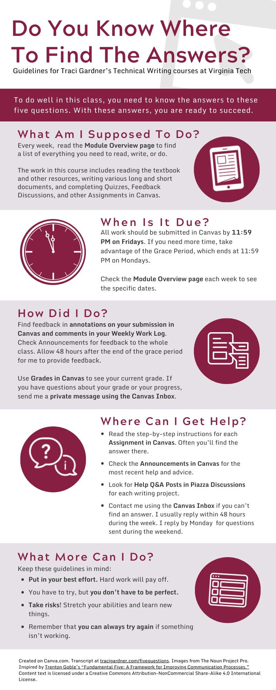

Guidelines for Traci Gardner’s Technical Writing courses at Virginia Tech

Click image for larger version. Transcript is the text on this page
To do well in this class, you need to know the answers to these five questions. With these answers, you are ready to succeed.
- What Am I Supposed To Do?
Every week, read the Module Overview page to find a list of everything you need to read, write, or do.
The work in this course includes reading the textbook and other resources, writing various long and short documents, and completing Quizzes, Feedback Discussions, and other Assignments in Canvas.
- When Is It Due?
All work should be submitted in Canvas by 11:59 PM on Fridays. If you need more time, take advantage of the Grace Period, which ends at 11:59 PM on Mondays.
Check the Module Overview page each week to see the specific dates.
- How Did I Do?
Find feedback in annotations on your submission in Canvas and comments in your Weekly Work Log. Check Announcements for feedback to the whole class. Allow 48 hours after the end of the grace period for me to provide feedback.
Use Grades in Canvas to see your current grade. If you have questions about your grade or your work, send me a private message using the Canvas Inbox.
- Where Can I Get Help?
- Read the step-by-step instructions for each Assignment in Canvas. Often you’ll find the answer there.
- Check the Announcements in Canvas for the most recent help and advice.
- Look for Help Q&A Posts in Piazza Discussions for each major writing project.
- Contact me using the Canvas Inbox if you can’t find an answer. I usually reply within 48 hours during the week. I reply by Monday for questions sent during the weekend.
- What More Can I Do?
Keep these guidelines in mind:
- Put in your best effort. Hard work will pay off.
- You have to try, but you don’t have to be perfect.
- Take risks! Stretch your abilities and learn new things.
- Remember that you can always try again if something isn’t working.
Created on Canva.com. Transcript at tracigardner.com/fivequestions. Images from The Noun Project Pro. Inspired by Trenton Goble’s “Fundamental Five: A Framework for Improving Communication Processes.” Content text is licensed under a Creative Commons Attribution-NonCommercial Share-Alike 4.0 International License.
{kind=link}